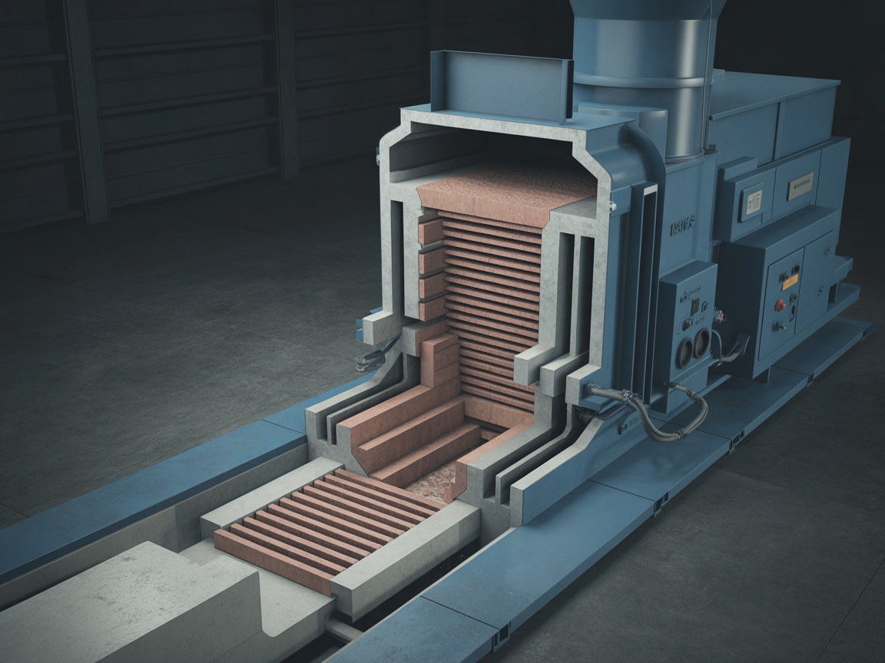
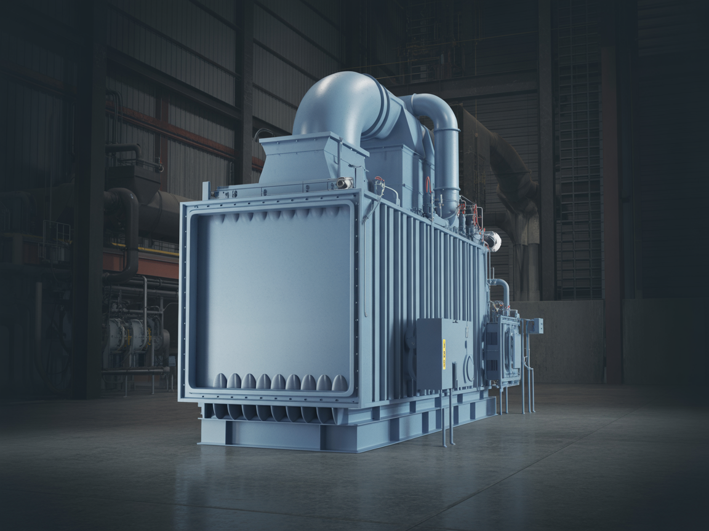
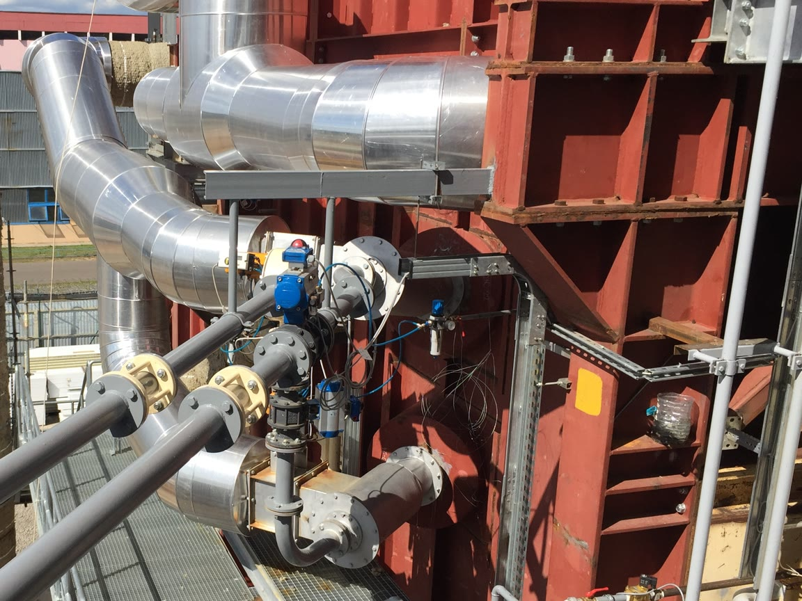

Scroll — watch our gas-liquid fuel burner come apart piece by piece. Proven experience across 24 fuel types.
Scroll ▾
The grate bars separateSupport frame and drive groupThe assembly closes back together
Combustion Technologies
Combustion Systems
Four core combustion technologies: high-efficiency, low-emission firing solutions for solid, pulverized, liquid and gaseous fuels. Every system is engineered to match the fuel type and capacity requirements.

Grate Combustion Systems
A widely used combustion technology in which solid fuels are burned under controlled conditions. Fuel is fed onto the grate surface, and controlled air supplied from below and/or above ensures complete combustion.
Stoker-fed, fixed, moving and chain grate types
Capable of firing medium- and low-grade fuels
Controlled combustion through zoned air distribution
High mechanical strength and long service life
Wide fuel flexibility: coal, biomass, RDF
Low investment and operating costs
Adaptable to a wide range of capacities

Fluidized Bed Combustion Systems
A modern combustion technology that burns solid fuels with high efficiency and low emissions. The sand/inert material at the furnace floor is fluidized with pressurized air, and the fuel burns homogeneously in suspension.
90%+ combustion efficiency, low emissions
Wide fuel flexibility (coal, biomass, RDF)
Controlled combustion at 800-900°C, low NOx
SO₂ reduction through limestone addition
Homogeneous temperature distribution
Low ash and slag formation
Durable and reliable system

Dust and Granule Firing Systems
A specialized combustion technology for the high-efficiency firing of pulverized coal, wood dust, biomass granules and combustible industrial dusts. The fuel is ground and fed via pneumatic conveying through dedicated burners.
Design tailored to dust and granular fuels
High combustion efficiency and low emissions
Automatic fuel feeding and control
Low ash and slag formation
Modular design, wide capacity range
Recovery of various biomass and waste streams
Low operating costs
Gas & Liquid Fuel Combustion Systems (Burner Systems)
Industrial burner systems for the high-efficiency firing of natural gas, LPG, fuel oil, diesel and other liquid/gaseous fuels. With automatic control, low emissions and high combustion efficiency, they are a core component of energy production plants.
Natural gas, LPG, fuel oil and dual-fuel options
Fully automatic ignition and modulating control
High combustion efficiency (95%+)
Low NOx and CO emissions
Wide capacity range (100 kW – 50 MW)
Instant start-up and shutdown
Precise temperature and pressure control
Fuel Diversity
Bersey combustion systems can utilize a total of 24 different fuel types across 3 categories — from biomass and agricultural residues to waste and alternative fuels, and liquid and gaseous fuels.